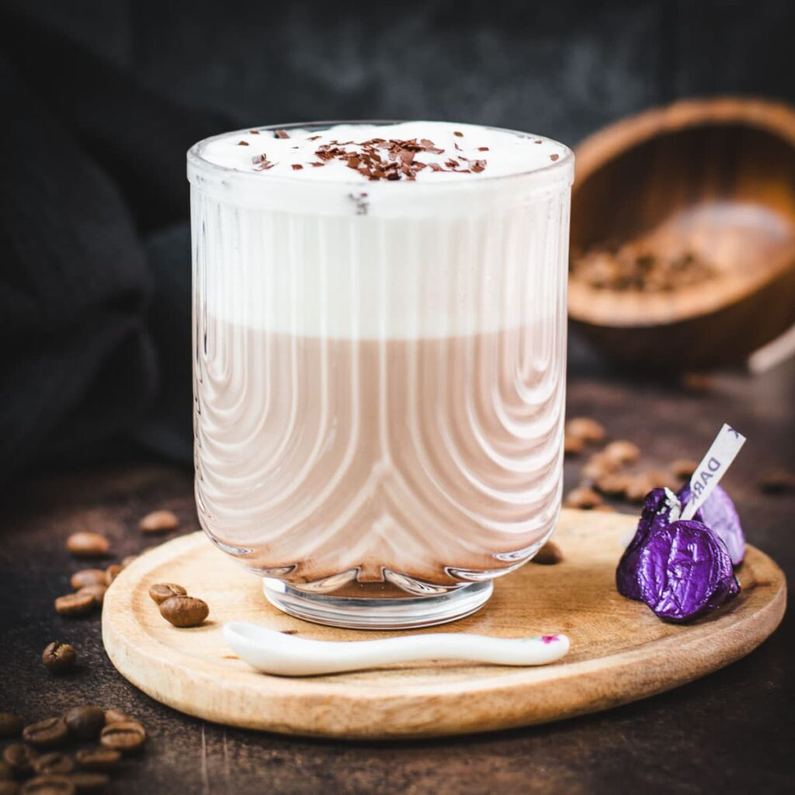

Slow Down & Sip Deep
Bean & Bloom Café is a calm, cozy space designed for students, remote workers, and anyone who appreciates quality coffee. We roast our beans in-house, bake pastries daily, and partner with local growers to support sustainability.
From quiet corners for studying to spacious tables for small groups, Bean & Bloom Café is designed to fit every kind of day. Enjoy our handcrafted espresso drinks, signature baked treats, and seasonal specials made with care. Whether you're stopping in for a quick pick-me-up or settling in for a productive afternoon, our café is built to make you feel at home.
Featured Seasonal Drink
Our Honey Lavender Oat Latte blends floral sweetness with smooth espresso. A perfect drink for peaceful afternoons.
Find our location on Google Maps.